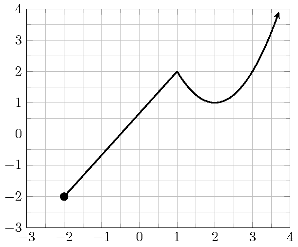

Topic 11 Introduction to Functions
11.1 It is a Flu Season
The following graph shows a relation between the week number from 2019/09/30 to 2020/01/27, and the number of people being tested for flu, and the number of people whose tests were positive.
- Can you describe this relation?
- Can you draw conclusions based on the graph?
- Can you estimate how many people in total had positive tests on 2020/01/01?
- What do think the trending will be after 2020/1/27? Why?

11.2 Definition and Notations
A relation is a set of ordered pairs. The set of all first components of the ordered pairs is called the domain. The set of all second components of the ordered pairs is called the range.
A function is a relation such that each element in the domain corresponds to exactly one element in the range.
For a function, we usually use the variable \(x\) to represent an element from the domain and call it the independent variable. The variable \(y\) is used to represent the value corresponding to \(x\) and is called the dependent variable. We say \(y\) is a function of \(x\). When we consider several functions together, to distinguish them we named functions by a letter such as \(f\), \(g\), or \(F\). The notation \(f(x)\), read as “\(f\) of \(x\)” or “\(f\) at \(x\)”, represents the output of the function \(f\) when the input is \(x\).
The domain of a function is the set of all allowed inputs. The range of a function is the set of all outputs.
To find the value of a function define by an equation at a given number, we substitute the independent variable \(x\) by the given number and then evaluate the expression. We call the procedure evaluating a function.
Example 11.1 Find the indicated function value.
- \(f(-2)\), \(f(x)=2x+1\)
- \(g(2)\), \(g(x)=3x^2-10\)
- \(h(a-t)\), \(h(x)=3x+5\).
Solution.
- \(f(-2)=2\cdot(-2)+1=-4+1=-3\).
- \(g(-2)=3\cdot(2^2)-10=3\cdot 4-10=12-10=2\).
- \(h(a-t)=3\cdot(a-t)+5=3a-3t+5\).
11.3 Graphs of Functions
The graph of a function is the graph of its ordered pairs. A graph of ordered pairs \((x,y)\) in the rectangular coordinate system defines \(y\) as a function of \(x\) if any vertical line crosses the graph at most once. This test is called the vertical line test.
Example 11.2 Determine which of the following graphs defines a function.

Solution.
Because in graphs A. B. C. there are vertical lines intersecting the graph at two points. So those graphs fail the vertical line test and hence don’t define functions. In graph D., although the graphs are not connected, but any vertical line only intersects one point. Therefore, Graph D. defines a functions.
11.4 Graph Reading
The domain of a graph is the set of \(x\)-coordinates of all points on the graph. The range of a graph is the set of \(y\)-coordinates of all points on the graph. To find the domain of a graph, we look for the left and the right endpoints. To find the range of a graph, we look for the highest and the lowest positioned points.
To find the coordinates of a point on a graph, one draw a horizontal line and a vertical line through the point. The number on the \(x\)-axis where the vertical line passing through is the \(x\)-coordinate of the point. The number on the \(y\)-axis where the horizontal line passing through is the \(y\)-coordinate of the point.
Example 11.3 Use the graph in the picture to answer the following questions.
- Determine whether the graph is a function and explain your answer.
- Find the domain (in interval notation) of the graph.
- Find the range (in interval notation) of the graph.
- Find the interval where the graph is above \(2\).
- Find the interval where the graph is is decreasing.
- Find all maximum and minimum values of the function if they exist.
- Find the value of \(y\) such that the point \((3, y)\) is on the graph.
- Find the value of \(x\) such that \((x, 0)\) is on the graph.

Solution.
- The graph is a function. Because every vertical line crosses the graph at most once.
- The graph has the left endpoint at \((-2, -2)\) and but no right endpoint. So the domain is \([-2, +\infty)\).
- The graph has a lowest positioned point \((-2, -2)\) but no highest positioned point. So the range is \([-2, +\infty)\).
- The graph is above 2 over the interval \((3, \infty)\).
- The graph is decreasing over the interval \((1,2)\).
- The graph has minima at \((-2,1)\) and \((2,1)\).
- The \(y\)-value of the point \((3, y)\) on the graph is \(2\).
- The \(x\)-value of the point \((x, 0)\) on the graph is \(-0.5\).
11.5 Practice
Problem 11.1 Find the indicated function values for the functions \(f(x)=-x^2+x-1\) and \(g(x)=2x-1\). Simplify your answer.
- \(f(2)\)
- \(f(-x)\)
- \(g(-1)\)
- \(g(f(1))\)
Problem 11.2 Suppose \(g(x) = -3x + 1\).
- Compute \(\dfrac{g(4)-g(1)}{4-1}\)
- Compute \(\dfrac{g(x+h)-g(x)}{h}\)
Problem 11.3 Suppose the domain of the linear function \(l(x)=1-2x\) is \((0, 1)\). Find the range of the function.
Problem 11.4 Use the graph in the picture to answer the following questions.
- Determine whether the graph is a function and explain your answer.
- Find the domain of the graph (write the domain in interval notation).
- Find the range of the graph (write the range in interval notation).
- Find the interval where the graph is above the \(x\)-axis.
- Find all points where the graph reaches a maximum or a minimum.
- Find the values of the \(x\)-coordinate of all points on the graph whose \(y\)-coordinate is \(1\).

Problem 11.5 Use the graph of the function \(f\) in the picture to answer the following questions.
- Find the \(y\)-intercept.
- Find the value \[\dfrac{f(3)-f(0)}{3}.\]
- Find the values \(x\) such that \(f(x)=0\).
- Find the solution to the inequality \(f(x)>0\). Write in interval notation.

Problem 11.6 Today Matt drove from home to school in 30 minutes. He spent 6 minutes on local streets before driving on the highway and 4 minutes on local streets towards school after getting off the highway. On local streets, his average speed is 30 miles per hour. On the highway, his average speed is 60 miles per hours.
- Write the distance \(d\) (in miles) he drove as a function of the time \(t\) (in minutes)?
- After 15 minutes, where was he and how far did he drive?
- How far did he drive from home to school?